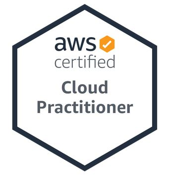

Welcome!

About Me
Well hello there, welcome to my webpage. I recently graduated from the University of Houston, receiving a bachelor’s degree in Computer Information Systems. With this degree I gained a generous amount of knowledge in technology, including software languages such as Java, FXML, HTML, CSS, PHP, SQL, and Ruby on Rails. I also learn skills such as Learn Six Sigma, PMBOK / Project Management Body of Knowledge, and AWS Cloud Computing. I have completed many software team projects that will be discussed below. In June of 2020, I acquired the AWS Solution Architect Associate certification. Please, explore the content below.
University of Houston – College of Technology
Date - May 2020
Bachelor of Science - Computer Information Systems
About This Website
This website was made with raw HTML and CSS, no website builder was used such as WIX, Squarespace, or WordPress. This is a static, responsive webpage, responsive in the sense that the appearance and content of the webpage changes depending on the screen size and orientation of the device you are using to view it. Feel free to change the orientation of your device to see the small changes in the navbar.
My Skills
HTML5
CSS3
Java
SQL
AWS Cloud
As stated earlier, I have gained a large skill set going through the computer information systems program at UH. I have worked with Programing Languages such as C++, Java (Object Oriented Programming), JavaFX using Scene Builder, Spring Boot Framework, SQL, HTML, CSS, and PHP.
I am fluent with software tools such as AWS Management Console, Oracle SQL Server, Microsoft Office Suite, Sense Builder, Xamp, PhpMyAdmin.
I am currently talking online classes to learn JavaScript, NodeJS, MongoDB, and React JS.
Experience

Java Applications - Created 2 database backed Java applications for DVD rental processes and warehouse operations. Incorporated SQL databases hosted with MySQL, Utilized dynamic GUIs with FXML, Scene Builder, Used Java Persistence API.
Database Management Application - Collaborated with a team of 6 to build a Data Solution for Allied Collision Center. Created a Java desktop application with GUI connected to Microsoft SQL Database for convenient data entry. Database included 25 tables with 7 inner & outer joins and GUIs scenes for each table.
Screenshots of the Database Application GUI


AWS Cloud Architecture - Built a highly available AWS Cloud Computing Architecture deployment model, to deploy on a three tier Web Application. Web tier, Application tier, Database tier. This diagram show the proper use of AWS services such as EC2s, VPCs, Subnets, RDSs, and public and private routing tables. Click Here to view more.
Certification
 AWS Certified Solutions Architect Associate – Acquired, June 2020 - Skilled with AWS Cloud Computing Infrastructures and able to create highly available cloud deployment models. This cert shows that I have a fundamental understanding of IT services and their uses in the AWS Cloud.
Click Here or click the picture to view the verified certification link.
AWS Certified Solutions Architect Associate - Acquired, June 2020 - Skilled with AWS Cloud Computing Infrastructures and able to create secure highly available cloud deployment models using architectural design principles based on customer requirements.
Click Here or click the picture to view the verified certification link.
Contact Me
Email - albertitauma@gmail.com
Linkedin -
Click Here